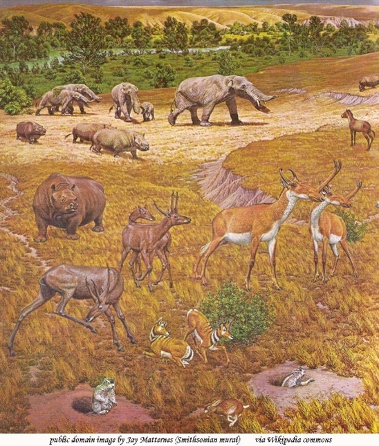
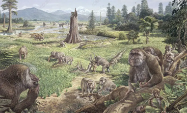
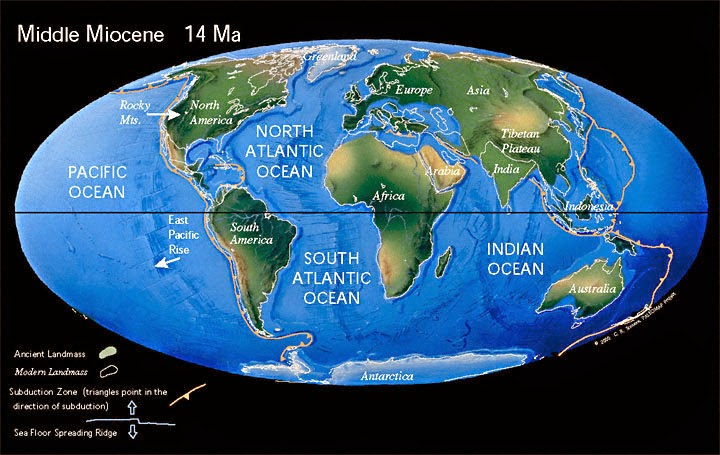

The Neogene Period is an important part in Earth's history with the first hominins appearing. This period consists of the Miocene and Pliocene epochs.
Life Forms during this Period
In this period, evolution of hominins was identified along with the diversification of grazing mammals.


Geological Features during this Period
This period involved significant tectonic and volcanic activity, the merging of continental plates, expansion of grasslands, and formation of mountain ranges.
